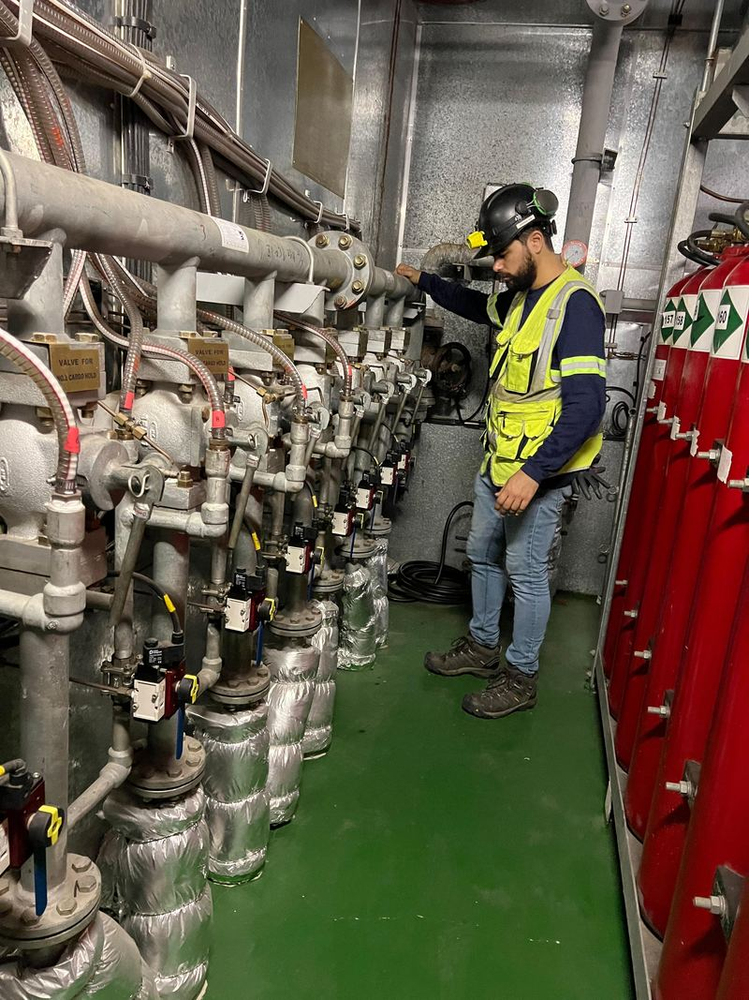
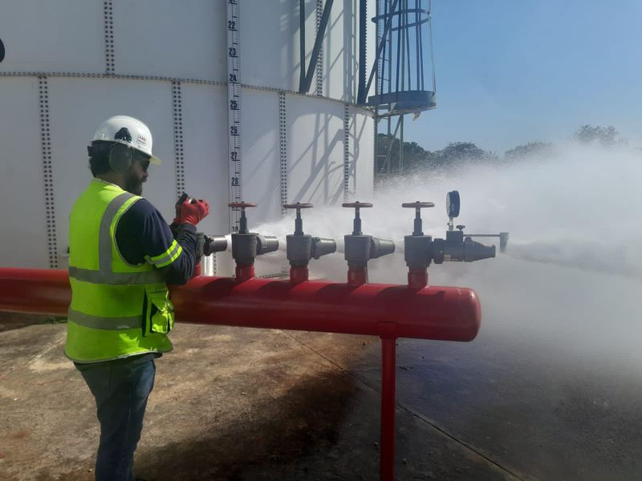
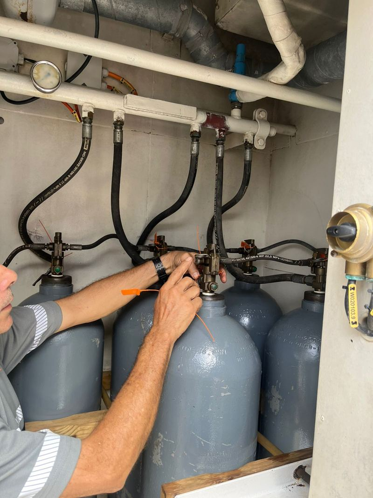

NFPA 10
Mantenimiento NFPA10
Mantenimiento profesional de extintores según norma NFPA10.
- Inspección Visual
- Mantenimiento Interno cada 6 años
- Verificación de Estado
Protegemos tu empresa con sistemas contra incendios de última generación. Especialistas en instalación, mantenimiento y certificación de equipos de seguridad.

500+
Clientes Satisfechos
10+
Años de Experiencia
1000+
Proyectos Completados
5.0
Calificación Promedio
Ofrecemos servicios especializados en sistemas contra incendios para proteger tu empresa y cumplir con todas las normativas de seguridad.
Somos un equipo de profesionales especializados en sistemas contra incendios con más de 10 años de experiencia. Nos dedicamos a proteger tu empresa con las mejores soluciones de seguridad contra incendios.

Cada instalación está diseñada para brindar la máxima protección y cumplir con todas las normativas de seguridad.

Todos nuestros trabajos incluyen certificación oficial y cumplimiento de normativas vigentes.
Ofrecemos planes de mantenimiento preventivo para asegurar el funcionamiento óptimo de tus sistemas.
Analizamos tus necesidades
Creamos una solución personalizada
Ejecutamos con la máxima calidad
Acompañamiento continuo
Información detallada sobre nuestros procedimientos de mantenimiento, pruebas hidrostáticas y recarga de extintores.
Los procesos internos varían dependiendo del fabricante del extintor. Nuestros técnicos están capacitados para trabajar con todas las marcas.
Uso: Extintores portátiles
Especializado para pruebas de presión en extintores estándar
Uso: Extintores de CO2, cilindros de Aire, Argón, Oxígeno, Nitrógeno
Diseñado para equipos que requieren mayor presión de prueba
Estas pruebas son reguladas por DOT (CFR49) y son mandatarias. El cumplimiento es obligatorio para garantizar la seguridad y legalidad de los equipos.
Según DOT CFR 49: extintores de agua, espuma y CO2 cada 5 años; extintores de PQM ABC, BC y D cada 12 años.
Según NFPA10, el mantenimiento interno se realiza cada 6 años o en caso de haberse utilizado el extintor, con inspección visual entre mantenimientos.
La carga de agua se cambia cada año y la de espuma cada 3 años.
Sí. Los procesos internos varían según el fabricante y nuestros técnicos están capacitados para trabajar con todas las marcas.
¿Necesitas proteger tu empresa? Conversemos sobre cómo podemos instalar el sistema contra incendios perfecto para ti.